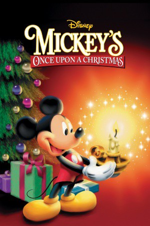

#5039 Mickeys fröhliche Weihnachten
Alternativ: Mickey's Once Upon a Christmas
 
 IMDB-Wertung: 7.2 / 10
IMDB-Wertung: 7.2 / 10  Metascore: 0
Metascore: 0 
A Christmas themed, three-part anthology-style video. The first part, "Donald Duck: Stuck on Christmas", is essentially a retelling of Groundhog Day (1993), with Huey, Dewey, and Louie reliving Christmas ad infinitum. Next is "A Very Goofy Christmas", in which Goofy tries to overcome his son's skepticism about Santa Claus. Finally, "Mickey & Minnie's Gift Of The Magi" recreate the classic tale of ironic Christmas selflessness. The stories are linked together by narration by Kelsey Grammer.
Jahr: 1999
Dauer: 62 Minuten
FSK: 0
Land: USA Studio: DenmarkTonspuren: DD2.0 - ,
Untertitel:
Auflösung: 720p (1280x720) Größe: 1167 MB
Genre: Komödie, Fantasy, Animation/Trick, Familie, Weihnachten
Regisseur: Jun Falkenstein, Alex Mann, Bradley Raymond, Toby Shelton, Bill Speers
Drehbuch: Robert Crichton
Soundtrack:
Darsteller:
Datei: X:\Kinder Disney HD\Classic Cartoon\Mickeys fröhliche Weihnachten (1999, FSK0, 1280x720).mkv seit 21.12.2016
Festplatte: Kinder-Filme+Trick
 Es gibt insgesamt 22 Filme in der Gruppe 'Kinder Disney HD\Classic Cartoon'
Es gibt insgesamt 22 Filme in der Gruppe 'Kinder Disney HD\Classic Cartoon'